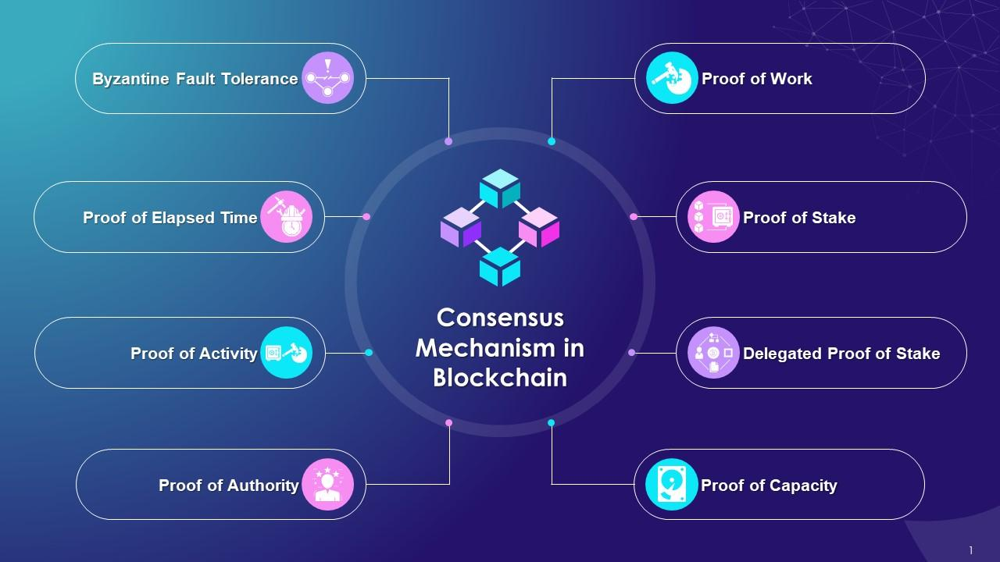

Apa Itu Konsensus?
Konsensus adalah mekanisme yang memungkinkan jaringan komputer yang terdistribusi untuk mencapai kesepakatan tentang keadaan data atau transaksi yang valid tanpa memerlukan otoritas pusat. Dalam konteks blockchain, konsensus digunakan untuk memastikan bahwa semua node dalam jaringan memiliki salinan buku besar yang identik dan valid, mencegah serangan serta menjaga integritas sistem.
Mengapa Konsensus Penting?
Konsensus memainkan peran penting dalam blockchain karena alasan berikut:
- Keamanan: Menghindari manipulasi atau pemalsuan data oleh aktor jahat.
- Desentralisasi: Memastikan bahwa tidak ada entitas tunggal yang memiliki kendali penuh atas jaringan.
- Ketahanan terhadap kegagalan: Memastikan bahwa jaringan tetap beroperasi meskipun beberapa node mengalami kegagalan.
- Transparansi: Memungkinkan semua peserta dalam jaringan untuk memverifikasi transaksi dengan cara yang dapat dipercaya.
Cara Kerja Byzantine Fault Tolerance (BFT)
Byzantine Fault Tolerance (BFT) adalah mekanisme konsensus yang dirancang untuk menangani masalah Byzantine Generals, yaitu situasi di mana beberapa node dalam sistem mungkin bertindak secara jahat atau mengalami kegagalan. Cara kerja BFT melibatkan:
- Replikasi data: Semua node menyimpan salinan data yang sama.
- Validasi pesan: Setiap node berkomunikasi dan memvalidasi transaksi.
- Mayoritas jujur: Keputusan diambil berdasarkan suara mayoritas dari node yang jujur.
- Toleransi terhadap kesalahan: Sistem tetap berfungsi meskipun ada node yang gagal atau bertindak tidak jujur.
Perbedaan Metode BFT dengan Proof of Work (PoW)
BFT dan Proof of Work (PoW) adalah dua pendekatan berbeda dalam mencapai konsensus. Berikut adalah perbedaannya:
| Aspek |
Byzantine Fault Tolerance (BFT) |
Proof of Work (PoW) |
| Keamanan |
Mengandalkan validasi oleh mayoritas node |
Menggunakan teka-teki kriptografi yang membutuhkan daya komputasi |
| Efisiensi Energi |
Lebih hemat energi karena tidak memerlukan perhitungan intensif |
Membutuhkan daya komputasi besar sehingga boros energi |
| Skala Jaringan |
Cocok untuk jaringan dengan jumlah node terbatas |
Lebih cocok untuk jaringan besar dan terbuka |
| Waktu Validasi |
Cepat karena tidak memerlukan perhitungan matematis yang kompleks |
Lambat karena harus memecahkan teka-teki kriptografi |
| Contoh Implementasi |
Tendermint, PBFT (Practical BFT) |
Bitcoin, Ethereum (sebelum PoS) |
Implementasi Konsensus Selain pada Blockchain
Selain dalam blockchain, mekanisme konsensus juga diterapkan di berbagai sistem lain, seperti:
- Sistem Database Terdistribusi: Digunakan dalam database terdistribusi seperti Google Spanner untuk memastikan konsistensi data antar server.
- Jaringan Peer-to-Peer (P2P): Digunakan dalam protokol berbagi file seperti BitTorrent untuk memastikan data yang diunduh valid.
- Sistem Keuangan: Digunakan dalam mekanisme pembayaran digital seperti Visa dan Mastercard untuk memastikan transaksi yang aman dan valid.
- Internet of Things (IoT): Digunakan dalam sistem sensor terdistribusi agar dapat bekerja secara sinkron dan menghindari kesalahan data.
Kesimpulan
Konsensus adalah elemen fundamental dalam blockchain dan sistem terdistribusi lainnya. Berbagai metode konsensus seperti BFT dan PoW memiliki keunggulan dan kelemahan masing-masing tergantung pada kebutuhan sistem. Dengan berkembangnya teknologi, mekanisme konsensus terus mengalami inovasi untuk meningkatkan efisiensi, keamanan, dan skalabilitas.